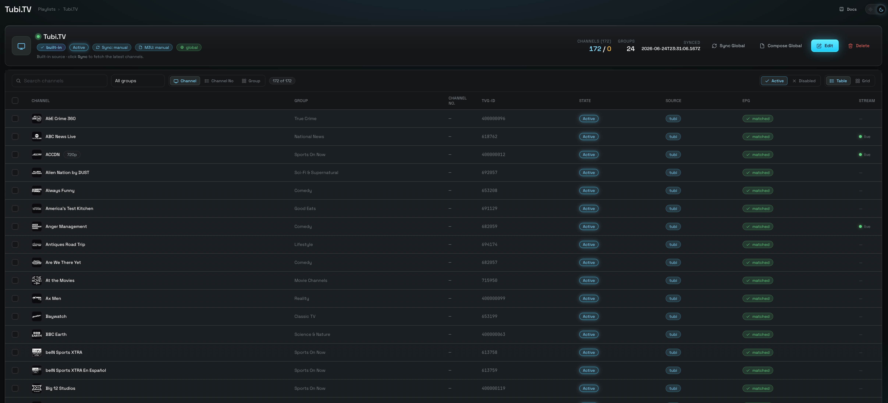

Playlist Failover — a channel with a stand-in
The same real-world channel usually exists on several providers. Group them — one parent, an ordered line of backup children — and masqueradarr quietly serves the next one alive when the first won't start.
Why a channel needs a backup
masqueradarr never stores a stream URL. It stores a pointer and resolves the real stream the moment you press play (that's the Playlists story). Usually that works. Sometimes it doesn't: the provider's scrape breaks, its token expires, its edge returns 403, or the whole service is down for the evening. The channel is in your playlist, your player asks for it, and nothing arrives.
The thing is, that channel is rarely unique. "ESPN" exists on several of the providers masqueradarr aggregates. If one is dark at 8pm, another is very likely fine. A failover group is you telling masqueradarr about that fact once, so it can act on it every night without you.
One pointer, one upstream
An ordinary channel resolves through exactly one provider. If that resolve or that fetch fails, the play fails. Your player shows an error and moves on.
The same channel, elsewhere
The same broadcast is carried by other providers in your catalog. They have different names, different logos, different guide ids — but the same picture.
An ordered line of stand-ins
Name one channel the parent and rank the others behind it. On an establish failure the engine walks the line and serves the first one that answers.
Nothing. A group is invisible downstream: your playlist still carries one line for that channel, with the parent's name, number, logo and guide. When a backup is carrying the stream, it is served under the parent's URL and identity — the player never learns it switched providers.
One parent, ordered children
A failover group is not a new collection — it's three fields written onto the channel rows you already have in playlistchannels. Every member of a group is an ordinary channel that has been given a role.
The parent
The channel the world sees. It is the one exported to your .m3u, the one your player requests, and the owner of the group's EPG identity. Everything about the group — its name, number, logo, guide link — is the parent's.
The children
Silent backups, tried in order. Each is hidden from every export, inherits the parent's guide link, and keeps its own provider for routing — so a child can come from a completely different service than its parent.
| Field on the channel row | Values | What it means |
|---|---|---|
failoverGroupId | opaque id, or null | Which group this channel belongs to. null = ungrouped. Never derived from the parent, so swapping the parent doesn't churn it. |
failoverRole | parent · child · null | The role within the group. Exactly one parent per group. |
failoverOrder | 0…N-1, or null | A child's position in the line. Lower is tried first. null on the parent. |
A group has exactly one parent and at least one child — anything else is degenerate and gets disbanded automatically. A channel belongs to at most one group. A group lives entirely inside one playlist — there is no such thing as a cross-playlist group. And these three fields are operator-owned: no sync ever writes them, so a group survives a re-sync untouched.
What a group changes — and what it doesn't
Grouping is a publishing decision as much as a resilience one. The moment you save a group, its children leave your published catalog.
- One line out, always. The composed
.m3uand its XMLTV guide contain the parent and nothing else. Children are filtered out of every export surface — the Global M3U, per-user exports, and per-playlist custom exports all run through the same filter. - Children stay fully visible in the app. They remain in the playlist detail view, nested under their parent and badged
child. Hiding them from a file is not the same as deleting them. - Children are still health-probed. The scheduled channel probe keeps testing hidden children on their own, so a dead backup shows up as dead before failover ever needs it. Failover can never mask a dead parent as healthy either — the probe always resolves each channel itself.
- Status is still the governor. A
Disabledchild is skipped at failover. ADisabledparent hides the whole group from exports — nothing about that channel ships until you re-enable it. - The guide identity is the parent's. On save, every child's
tvg_idand EPG link are overwritten with the parent's. That is what keeps the exported line coherent no matter which member is actually serving.
Build a cross-provider group, step by step
The payoff of failover is a backup on a different provider — if all your backups sit behind the upstream that just died, you have gained nothing. A group lives inside a single playlist, and a built-in playlist only ever holds one provider's channels. So the first job is to gather the candidates into one custom playlist. That's what Create and Append are for.
Ctrl/Cmd+click a row). Hit Create in the selection toolbar and name a new custom playlist. this becomes the clone that hosts the groupCtrl/Cmd+Shift+click range-selects. A “{n} selected” pill appears with the selection toolbar.1 is tried first.A plain click on a row when two or more are already selected opens the bulk edit drawer, not the group modal — build your selection with checkboxes or modifier-clicks. And while the Group button lights up at one selected channel, Save group stays disabled until you have a parent and at least one child; the modal will tell you so: “Select at least two channels — one parent plus one or more backups.”

Living with it afterwards
Once saved, the group becomes a small tree in the playlist's channel list: the parent, then its children indented beneath it with a └ connector, in failover order.
Pills and a collapse arrow
A parent carries a parent pill and a “{n} backup(s)” count, plus a chevron that collapses its children out of the way. Each child carries a child pill. The same pills follow the channel into the grid view, the channel drawer, Channel Mapping and Active Streams.
The Group actions menu
Every parent row has a waffle menu with Edit group (reopens the modal, back-filled with the whole group) and Disband group. Inside the modal you can re-drag the order, Set parent to promote a child, or add members by re-selecting a wider set before opening it.
The rules the UI enforces for you
- A child's guide link is read-only. In the channel drawer a child's TVG-ID field is disabled and labelled · inherited, with the hint “Inherited from the group parent — edit the parent's EPG link instead.” The server refuses a direct write with
409 failover_child_epg_locked. Channel Mapping won't let you select a child, and auto-match skips children entirely. - Editing the parent's guide link cascades. Relink the parent — in the drawer, on the Mapping screen, or via a bulk edit — and every child is updated in the same request. Open screens update live; you don't need to re-sync or reopen anything.
- A channel already in another group is handled, not rejected. Pull a foreign child into a new group and it's badged “will be moved” — on save it changes hands and its old group is repaired. Pull in a foreign parent and Save is blocked: “… already heads another failover group — disband that group first.”
- Everything else about a child stays editable. Rename it, renumber it, change its group-title, disable it. Only its EPG identity is owned by the parent.
- A group can never go headless. Any prune or delete that removes the parent — or the last child — auto-disbands the group. It never promotes a child in its place, because that would silently change which stream is the exported one.
Disband group has no confirmation dialog — from the modal footer or the row menu, it fires at once. It is not destructive: members simply lose the grouping, keep the guide link they inherited, and the children re-enter the export as ordinary channels. But the ordering and the parent choice are gone; rebuilding means re-selecting and re-dragging.
What happens when the parent dies
Failover is an establish-time mechanism. It fires when a stream fails to start, not mid-picture. The Rust data plane keeps a per-stream cursor — an attempt number — and asks Node's resolve seam for that attempt's candidate. Attempt 0 is the channel itself; attempt N is its Nth Active child.
- 200 · grant → serve
- 502 · died → next
- 410 · none left → stop
.m3u line — the parent's name · number · guide, unchanged. The player never learns it switched providers.
live · switch unseen
The data plane caches one shared policy — headers, relabel rules, allowed hosts — per provider. A child from a different service could have clobbered its parent provider's policy for every other stream in flight. It can't: the grant names the serving candidate's provider, and the policy is filed under that key. A dlhd parent backed by a pluto child never disturbs dlhd's other viewers.
The walk is capped at 8 attempts and wraps back to the parent once — so a stale pin can never spin. An ungrouped channel costs exactly one extra question to the seam (answered 410 immediately, from a partial index) before it fails the way it always has.
Settings → Advanced → Video proxy engine
Both live in the proxyconfigs subsystem alongside the rest of the engine's knobs, so both can be set globally or overridden for a single playlist from its drawer. The panel auto-saves — there is no Save button. (Full detail on the two tiers is on the Video proxy engine page.)
failoverEnabled
“When a channel's stream fails to establish, fall through to its configured failover backups in order.” On by default, because configuring a group is the real opt-in — an ungrouped channel behaves identically either way. Turn it off to make every channel fail like an ungrouped one, without disbanding anything.
failoverOnDefiniteError
“Also treat a definitive upstream error response (404 / 403 / 5xx — normally passed through to the player) as a failover trigger.” Off by default because it changes long-standing pass-through semantics. Turn it on when a provider answers politely with a 403 rather than simply going dark.
With the second switch off, a provider that returns a clean 403 is a deliberate answer — masqueradarr forwards it verbatim and your player shows the error. With it on, that 403 becomes just another reason to try the next backup, and only the last definitive answer is forwarded if every candidate refuses.
What you can and cannot do
One habit matters more than all the others, and the UI will happily let you get it wrong.
Group inside a custom playlist
Clone your primary channel into a new custom playlist, Append its equivalents from other providers, and build the group there. The clone's channels each remember their own origin, so a single group can span dlhd, pluto, tubi — whatever you have.
The playlist is Custom-endpoint, so it publishes at its own path with its own guide, and hiding the children affects nothing but that playlist.
Group inside a built-in playlist
The Group button works on a (Default) source playlist, but you should not use it there. A group built on a built-in is fragile, changes what everyone else receives, and can't give you the one thing failover is for.
It is allowed rather than blocked because the machinery is generic — not because it's a good idea.
Five reasons, concretely
- A built-in holds one provider's channels. Every “backup” you can pick shares the upstream that just died. Cross-provider redundancy is only reachable by Append-ing into a clone — that is the whole point of the walkthrough above.
- Built-ins re-sync from the live provider. Your group survives the upsert, but any sync that prunes the parent (or the last child) because the provider renamed or dropped it will auto-disband the group. Groups quietly evaporate over time, and nothing tells you.
- Built-ins are Global-endpoint. Hiding a child removes it from the consolidated Global M3U for every user of that playlist, not just you.
- Cloning does not carry the group. Clone copies deliberately start ungrouped — the three fields are stripped. So the group you built on a built-in never transfers into the custom playlist you eventually want.
- Reset wipes it. A source playlist's Reset deletes and rebuilds its channel rows from scratch. The group goes with them.
The in-app player requests a channel without naming a playlist. When that happens the resolver prefers the canonical source-playlist row over any clone copy of the same stream. So a group left behind on a built-in will shadow the group you built on your clone, for in-app playback of that channel. Clean up stray built-in groups.
| Can you… | Answer | Why |
|---|---|---|
| Back a parent with a child from a different provider | Yes | The child resolves through its own adapter under its own policy key. |
| Group channels from two different playlists | No | A group lives inside one playlist. Bring them together with Append first. |
| Put one channel in two groups | No | Membership is a single field on the row. |
| Pull in a channel that heads another group | No — 409 | It would leave that group headless. Disband it first. |
| Pull in a channel that is a child of another group | Yes | Badged “will be moved”; it changes hands and the donor group is repaired. |
| Build the group on a clone / custom playlist | Yes — do this | Stable, isolated, and the only way to mix providers. |
| Build the group on a built-in (Default) playlist | Possible — don't | Same-provider only, disbanded by prunes, and it changes the Global M3U. |
| Edit a child's TVG-ID / EPG link | No — 409 | Inherited from the parent. Edit the parent; it cascades. |
| Rename, renumber or disable a child | Yes | Only the guide identity is owned by the parent. |
Keep a Disabled child in the group | Yes | It is simply skipped at failover, and re-enters the line when re-enabled. |
| Disable the parent | Careful | The whole group leaves the export until it's re-enabled. The modal warns you. |
| Reorder the children after the fact | Yes | Edit group → drag → Save group. No EPG cascade; order only. |
Known limits
Failover is deliberately narrow. It makes a channel start; it does not make a channel unbreakable.
No mid-segment splice
A parent that dies while you're watching is caught on the player's next manifest refetch, not instantly. Seamless mid-stream splicing is a future enhancement.
Coarser trigger
In a continuous raw-TS session, failover triggers on a playlist-refresh failure rather than a per-segment gap. The cursor is kept alive across the swap.
Usable only under local origin
An HDHomeRun channel is a bare MPEG-TS socket. On the ordinary rewriting path it still can't be served, so such a child is walked past. With originEnabled on for that playlist it is servable — the socket is segmented in-engine — so check which path the playlist runs on before ranking one as a backup.
Health via propagation
A child living in a clone gets its health from the probe propagating along its origin, not from a direct sweep of the clone.
Two places tell you a group is earning its keep: Active Streams badges a failed-over session failover → <child> with the backup's position, and the dedicated failover log category records the whole lineage — Node names the parent and playlist, the Rust engine carries the session id. Both are gated by the single log level on Settings. See Operations.
failover_walk
next → Sources & adapters